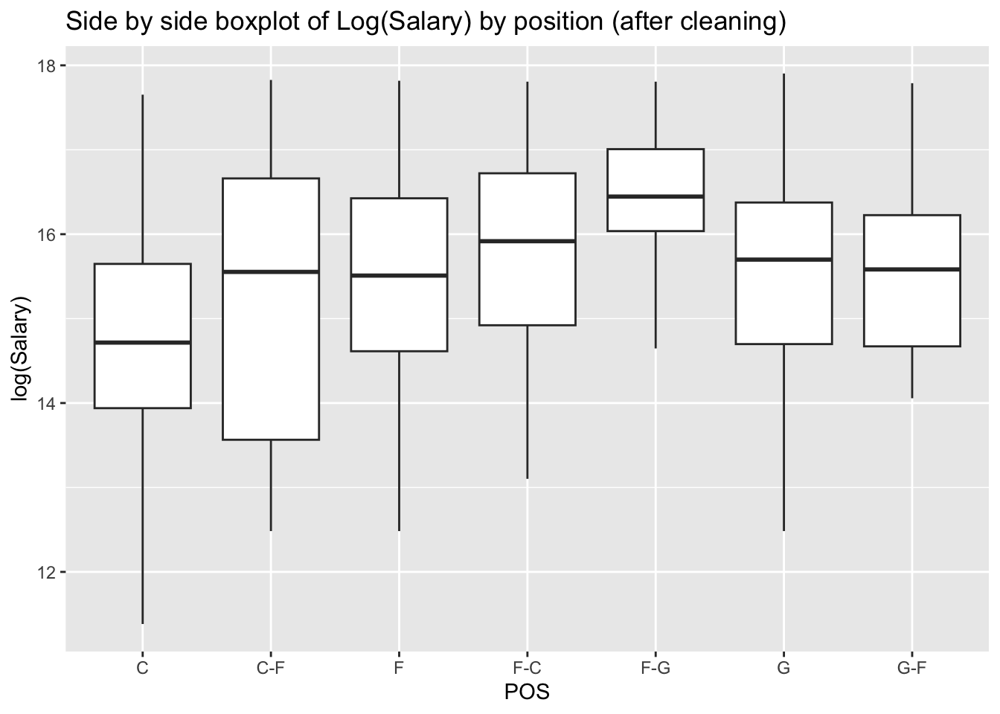

# packages being usedlibrary(tidyverse)library(corrplot)library(dplyr)library(GGally)library(car)NBA_Player_Stats <-read.csv("Datasets/2025-2026 NBA Player Stats - NBAstuffer.csv")NBA_Player_Stats <- NBA_Player_Stats[, -1]NBA_Player_Contracts <-read.csv("Datasets/2025-26 NBA Player Contracts.csv")result <-merge(NBA_Player_Stats, NBA_Player_Contracts, by.x ="NAME", by.y ="Player")head(result)
We decided to do Bayesian Inference on this question: Can we use the posterior predictive distribution to identify players who are significantly overpaid or underpaid relative to their market value?
First, we merged the two datasets we found into one dataset. Then we perform EDA on the dataset, explore the distribution of variables to find if there exists patterns, outliers, and we would also want to find if there’s any relationship between variables which would influence our later on analysis. Data cleaning is also conducted at this step as well by dropping some columns that are unrelated to our research question and removing the outliers we find.
The two methods we decided to use are:
Using stan to build a Bayesian linear regression model.
Before building the model, we will do variable selection based off the definition of the variables, and using methods like VIFs, forward model selection to choose the appropriate variables for the model. Then we will use the model to do stan, choosing the appropriate prior and posterior for the variables, and do posterior predictive distribution to identify players who are significantly overpaid or underpaid relative to their market value.
MCMC Metropolis-Hastings
We decided to do something related to MH algorithm. We implemented the Metropolis-Hastings algorithm manually to sample from the posterior distribution. Then, compare the MCMC result with the Stan method result. This allows us to determine whether or not those two methods produce consistent posterior estimates.
Data Cleaning
We notice that our contracted salary columns (X2025.26 to X2030.31) are treated as character instead of numeric because of the extra dollar sign ($). We must remove the sign and set these to numeric for later analysis.
result <- result %>%mutate(across(starts_with("X20"), ~as.numeric(gsub("\\$", "", .x))))class(result$X2025.26)
[1] "numeric"
We also need to check whether there are any NA values for our response variable; if NA exists we would need to drop that row.
result[is.na(result$X2025.26), ]
NAME TEAM CUR POS AGE GP MpG USG. TO. FTA FT. X2PA X2P. X3PA
88 Chris Livingston Cle * F 22.4 3 5.8 17.9 0 1 1 4 1 3
X3P. eFG. TS. PpG RpG ApG SpG BpG TOpG P.R P.A P.R.A VI ORtg DRtg Rank
88 0 0.571 0.605 3 1 0.3 0.3 0 0 4 3.3 4.3 6.7 129 91 381
Team X2025.26 X2026.27 X2027.28 X2028.29 X2029.30 X2030.31 Guaranteed
88 MIL NA NA NA NA NA NA $2296274
Additional
88 livinch01
There exists one row which misses the value for our response variable, we drop this observation.
We notice that the distribution of the contracted salary (X2025.26) is heavily right-skewed. A log transformation is necessary in order to standardize the variable.
Salary by Position
# Positionggplot(df, aes(x = POS, y =log(Salary))) +geom_boxplot() +labs(title ="Side by side boxplot of Log(Salary) by position")
# Position boxplot after data cleaningggplot(df, aes(x = POS, y =log(Salary))) +geom_boxplot() +labs(title ="Side by side boxplot of Log(Salary) by position (after cleaning)")

Predictor Distributions and Relationships with Log(Salary)
USG TO TS PpG RpG ApG SpG BpG
2.543840 1.244512 1.239870 6.016229 2.464104 2.920397 1.777892 1.773535
We notice that for the heat map, there’s no correlation coefficient greater than \(0.8\), which means that all the variables at this stage are not considered to be highly correlated to each other. So we decide not to drop any of them.
Note that for our VIF values, there exists one VIF value of \(6.016229\) (PpG) which is normally considered to be a concerning threshold that requires further investigation since this variable could potentially be affecting coefficient estimates. Since PpG represents points per game, higher PpG surely results in higher Salary. However, we decide not to drop this column, since this VIF value is not extremely high (less than 10), and this variable acts as a key factor to consider for our research question.